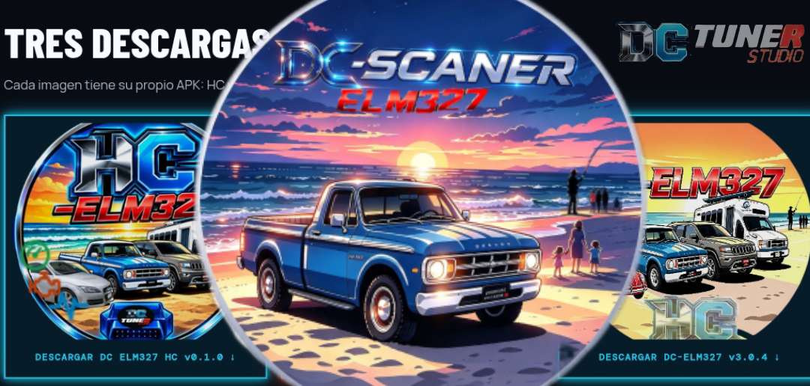
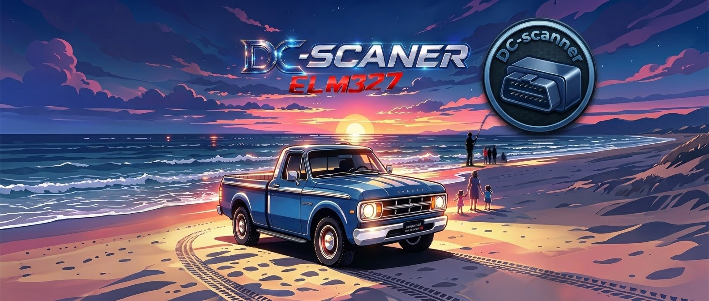
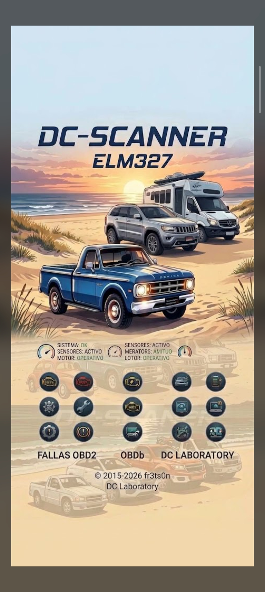

Fallas OBD-II
Lee códigos de diagnóstico y permite borrarlos desde la aplicación cuando el vehículo y la ECU lo admiten.
DC LABORATORY · ANDROID · OBD-II
Consulta datos del vehículo desde Android mediante un adaptador ELM327 compatible. DCScanner / DC-ELM327 permite leer códigos de falla y datos de sensores, revisar información del vehículo y guardar lecturas para analizarlas después. La comunicación depende del adaptador y del tipo de conexión disponible.
La app necesita un adaptador OBD-II ELM327 compatible conectado al vehículo; el teléfono por sí solo no lee la ECU.
DIAGNÓSTICO Y REGISTRO
Las funciones que aparecen a continuación se basan en la documentación del proyecto DC-ELM327. El alcance de la lectura depende del vehículo, de la ECU y del adaptador ELM327 utilizado.
Lee códigos de diagnóstico y permite borrarlos desde la aplicación cuando el vehículo y la ECU lo admiten.
Consulta valores del vehículo en tiempo real y registra lecturas para revisarlas durante o después de una prueba.
Consulta los datos congelados asociados a una condición de falla, cuando estén disponibles en el vehículo.
Revisa información del vehículo reportada por la unidad de control y disponible mediante OBD-II.
Visualiza parámetros con gráficas, dashboard y HUD; el proyecto documenta vistas de día y de noche.
Guarda registros y vuelve a cargarlos para analizar los datos capturados más tarde.
Importante: leer o borrar un código no repara la causa de la falla. Usa la información como apoyo de diagnóstico y consulta a un técnico antes de realizar intervenciones.
IMÁGENES DE DRIVE
Las tres imágenes muestran la identidad visual, el resumen de descargas y una vista vertical de la interfaz. La foto que compartiste queda atenuada como fondo de esta página.

DC-ESCANER.apk.

DESCARGA Y VERSIONES
El botón azul descarga directamente el archivo que ya figuraba en la tarjeta DCSCANNER. También puedes abrir la release versionada v3.0.4 y consultar su archivo de verificación SHA-256.
La suma corresponde a la descarga versionada v3.0.4; no debe confundirse con el archivo del alias “ultima”.
Instalación: Android puede pedir autorización para instalar APKs descargadas fuera de Play Store. Comprueba que el archivo termine en .apk, que provenga de la fuente oficial y que el adaptador sea compatible antes de conectarlo al vehículo.